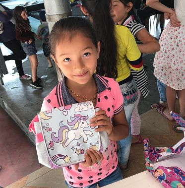
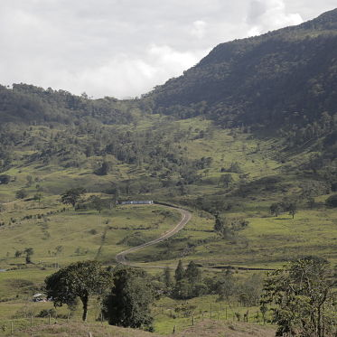
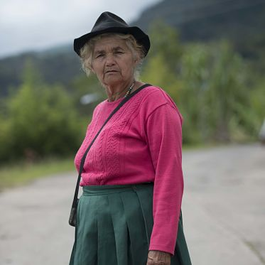
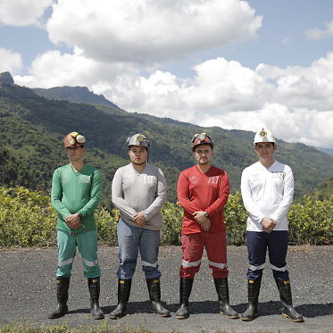
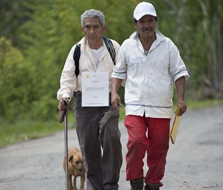
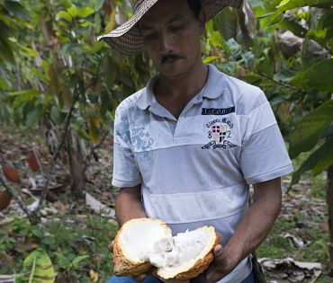
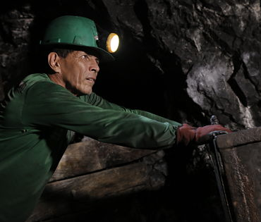
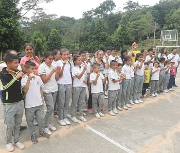
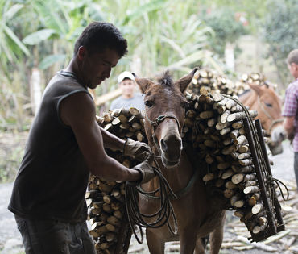
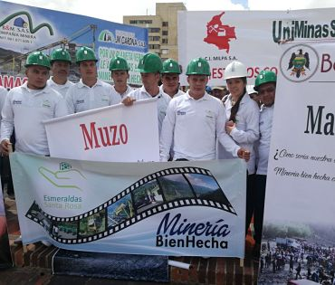

Fundación Santa Rosa es el brazo social de la empresa Esmeraldas Santa Rosa, ubicada en el sector minero de Maripí, municipio del occidente de Boyacá.

Fomentar el crecimiento sostenible de la comunidad de Maripí, así como de los municipios aledaños, mediante el desarrollo de proyectos sociales que contribuyan al fortalecimiento de las capacidades locales de sus habitantes; a facilitar el diálogo entre la comunidad, el Estado y la empresa; a impulsar la generación de conocimiento y la protección de la cultura; a cimentar empoderamiento y a promover el respeto por los derechos humanos, con el fin de construir una región próspera y en paz.

Para el 2025, Fundación Santa Rosa habrá ejecutado parte de sus programas y proyectos, y podran evidenciarse en la región transformaciones evidentes y considerables a nivel educativo, cultural, de paz y de desarrollo.

El desarrollo sostenible hace parte de nuestro pensamiento y, por ende, rige todo nuestro actuar, enmarcado en ese sentido en trabajar por el crecimiento económico y social, con respeto al medioambiente y cumpliendo nuestros compromisos con el Estado.

Compañía líder en exploración y explotación de esmeraldas, actividad que realiza a través de procesos tecnológicos innovadores, con el fin de brindarle al mercado un producto de alta calidad que satisfaga sus expectativas.
Sitio Web:
www.esmeraldassantarosa.com
Maripí, municipio del occidente de Boyacá, es el área de influencia directa de Fundación Santa Rosa, incluyendo la cabecera municipal, los centros poblados, las veredas y sectores donde se asientan los grupos de interés. Estos grupos de interés están conformados por las comunidades, sus organizaciones y representantes, autoridades de las entidades territoriales locales, regionales y nacionales, los entes de control y los actores privados. El área de influencia indirecta de la Fundación corresponde a la provincia del occidente de Boyacá, donde la actividad de la empresa Esmeraldas Santa Rosa también tiene incidencia. Esta zona tiene un área de 2.421 km2 y está compuesta por, además de Maripí, los municipios de Otanche, Quípama, La Victoria, San Pablo de Borbur, Muzo, Pauna, Coper, Buenavista, Caldas, Saboyá, Briceño, San Miguel de Sema y Tununguá. Estos municipios comparten la cuenca del río Minero y se reconocen tradicional e institucionalmente como un territorio que comparte dinámicas socioeconómicas y culturales.



En Fundación Santa Rosa buscamos que la comunidad del municipio de Maripí y el occidente de Boyacá tenga las mismas posibilidades de crecimiento y de ejercer sus derechos sobre la base de sus potencialidades y capacidades. Para ello, desplegamos las siguientes líneas estratégicas, enmarcadas en tres grandes programas, cada uno con sus respectivos proyectos:

La principal riqueza del municipio de Maripí, en particular, y del occidente de Boyacá, en general, es la diversidad cultural y natural. Es por ello que con esta línea buscamos generar conocimiento desde los procesos sociales, con pertinencia educativa y propuestas pedagógicas acordes con la generación de alternativas para la construcción de una mejor calidad de vida en la comunidad.
En la Fundación Santa Rosa creamos una beca para financiar la educación superior de estudiantes que no cuentan con recursos económicos suficientes y que se destacan por su excelencia académica.
Promovemos, fomentamos y facilitamos las actividades culturales y deportivas más representativas de la región.
Promovemos la validación de estudios de básica primaria y secundaria para empleados de Esmeraldas Santa Rosa, en cuyas instalaciones de la sede operativa se imparten clases por parte de docentes de la Institución Educativa Técnica Zulia de Maripí. Con esto buscamos los siguientes objetivos:
Buscamos incorporar a jóvenes rurales en iniciativas y dinámicas económicas que permitan su integración a los mercados productivos y laborales locales y regionales, bajo una remuneración justa que permita el mejoramiento de su calidad de vida. Esto será posible realizando las siguientes actividades:

Esta línea tiene como propósito impulsar el fortalecimiento de organizaciones sociales, con el fin de facilitar el diálogo con los diferentes actores de la provincia y construir así visiones compartidas de desarrollo y paz. Esta línea estratégica considera la generación de ingresos y las actividades agropecuarias como frentes determinantes para el progreso de la comunidad del municipio.
Con este proyecto educativo-productivo promovemos, orientamos y desarrollamos las capacidades de los habitantes del municipio. La ERC proveerá a la comunidad de una Granja Integral, donde la comunidad participará de capacitaciones, recibirá acompañamiento y contará con asistencia técnica especializada para que puedan desarrollar competencias y habilidades enfocadas en la búsqueda del desarrollo rural comunitario. El objetivo es:
En la Fundación ayudamos a construir relaciones duraderas entre Esmeraldas Santa Rosa y sus proveedores y distribuidores, fundamentadas en principios y valores compartidos que garanticen la sostenibilidad mediante la mejora continua de competencias administrativas, comerciales, técnicas, productivas y financieras. Con ello la compañía podrá:
Fomentamos del turismo como una alternativa de desarrollo con responsabilidad social y ambiental. La actividad extractiva, en particular la esmeraldífera, es, para la Fundación, una oportunidad para desarrollar el sector turístico y promoverlo en la región. El fin de este proyecto es:
Buscamos incorporar a jóvenes rurales en iniciativas y dinámicas económicas que permitan su integración a los mercados productivos y laborales locales y regionales, bajo una remuneración justa que permita el mejoramiento de su calidad de vida. Esto será posible realizando las siguientes actividades:

Esta línea estratégica busca el empoderamiento de la comunidad y el fortalecimiento de las capacidades institucionales (Estado y empresa), mediante la participación ciudadana, el mejoramiento de la relación con la gestión pública y el control social para la construcción de una región más democrática y en paz.
Con este proyecto buscamos ser una herramienta de cooperación y generación de alianzas entre actores locales, de tal manera que se logre la implementación de una cultura de paz basada en el fortalecimiento del dialogo, el respeto de los Derechos Humanos y del Derecho Internacional Humanitario, más la construcción de una vida digna con un desarrollo socioeconómico sostenible que mejore las condiciones socioeconómicas de la población del municipio. El fortalecimiento de estas expresiones de la sociedad civil permitirá:
Fundación Santa Rosa fomenta el diálogo de Esmeraldas Santa Rosa con sus grupos de interés, el cual incluye tanto a Maripí, como a los municipios del occidente de Boyacá que conforman el área de influencia del proyecto. Para lograr este fin, se establecerá una Mesa de Diálogo Multiactor con el objetivo de: